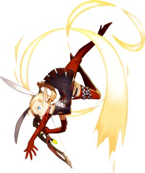
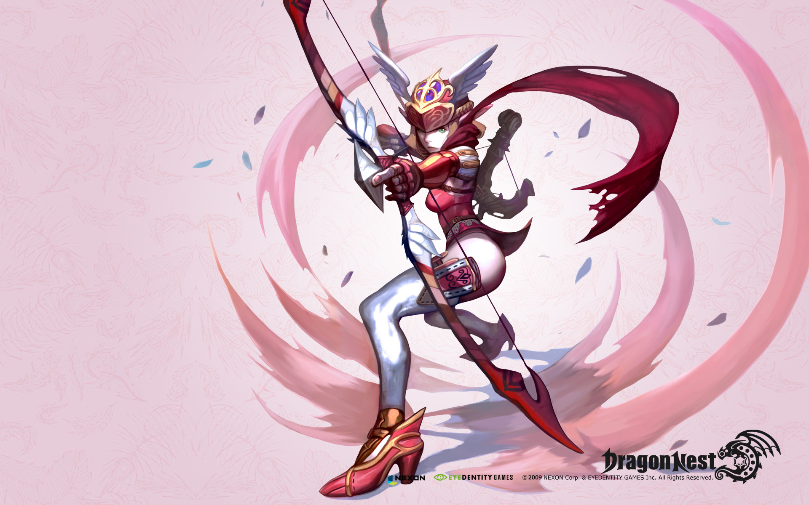

Archer

Archer menggunakan panah sebagai senjata utamanya, dan merupakan job paling gesit di game ini. Terdapat 2 jenis class reguler yang dapat dipilih pada level 15, yaitu Acrobat dan Hunter. Dan hero ini juga memiliki 1 class special, yaitu SILVER HUNTER. class tersebut dapat kalian ambil kalau kalian memilih karakter SILVER HUNTER. Kemudian ketika mencapai level 45 / 50, kalian dapat memilih 5 class berbeda (4 class untuk karakter reguler. Dan sisanya untuk karakter special). Temmpest dan Wind Walker untuk class Acrobat. Sedangkan Sniper dan Artillery untuk class Hunter. Itu semua hanya untuk archer reguler. Untuk class special hanya bisa lanjut 1 job saja, yaitu SILVER HUNTER
- Acrobat
- Tempest
- Wind Walker
- Hunter
- Sniper
- Artillery
- Silver Hunter

class yang sangat gesit dengan combo yang sangat banyak dibanding hunter, namun dengan critical yang kecil dan daya serang yang amat berat. Senjata acrobat adalah shortbow dikarenakan sebagian besar skillnya dapat digunakan jika menggunakan shortbow.

Lanjutan dari Class Acrobat yang memiliki Combo mematikan dan damage yang besar. Skill nya yaitu Hurricane Dance skill combo yang dapat menghancurkan super armor dan berdamage besar.

Lanjutan dari Class Acrobat yang memiliki skill combo yang sangat indah untuk dilihat tetapi mematikan. Skill nya yaitu Rising Storm, Menarik musuh dengan berputar lalu meluncurkan nya ke atas.

class yang tidak terlalu gesit,berdaya serang fisik (Sniper) dan juga magic(Artillery),namun critical dan daya serang yang cukup besar mampu menghancurkan lawan dengan cepat dengan combo yang lumayan banyak, namun lebih sedikit dari Acrobat. Jangkauan serang Hunter termasuk Long Range (jarak jauh) khususnya Sniper. Senjatanya yaitu Crossbow dan Longbow.

Lanjutan dari Class Hunter yang berfokus ke serangan fisik.Skill nya yaitu Cheating point,mengeluarkan bunga yang dapat meledak dan dapat juga digunakan untuk Menarik perhatian (Provoke) musuh dan mendapatkan buff final damage selama 10 detik.

Lanjutan dari Class Hunter yang berfokus ke serangan magic.Skill nya yaitu Detonating Arrow,Menembakkan panah ke arah musuh dan ketika mengenai musuh dalam 3 detik maka panah tersebut akan meledak dengan damage yang besar.

Class spesial yang memiliki kecepatan Serang yang tinggi dan fokus pada skill ice-nya. Class ini mempunyai skill khusus untuk bisa terbang.
 Facebook :
Facebook :  IG :
IG :